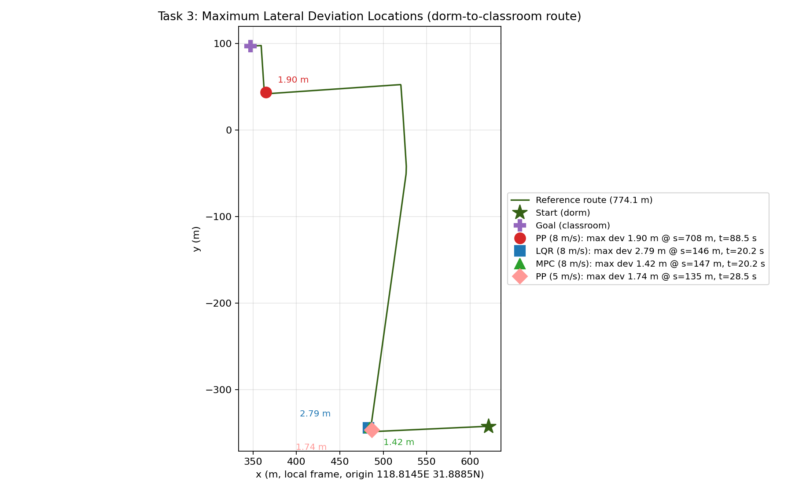
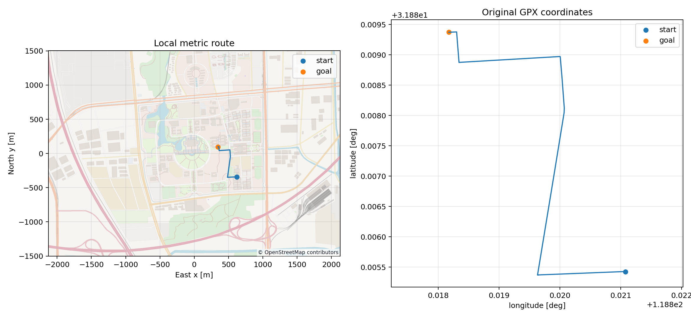
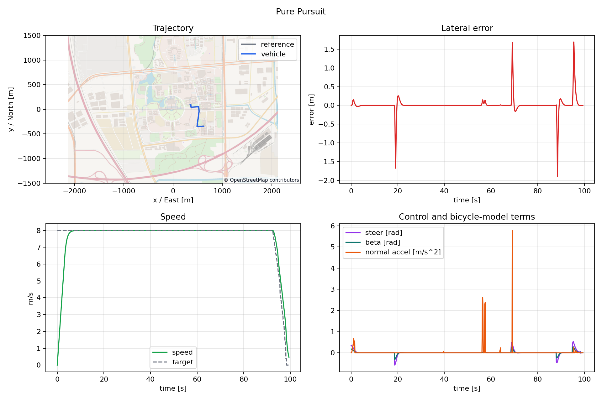
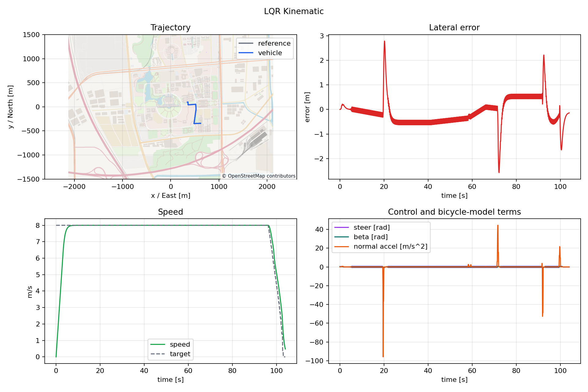
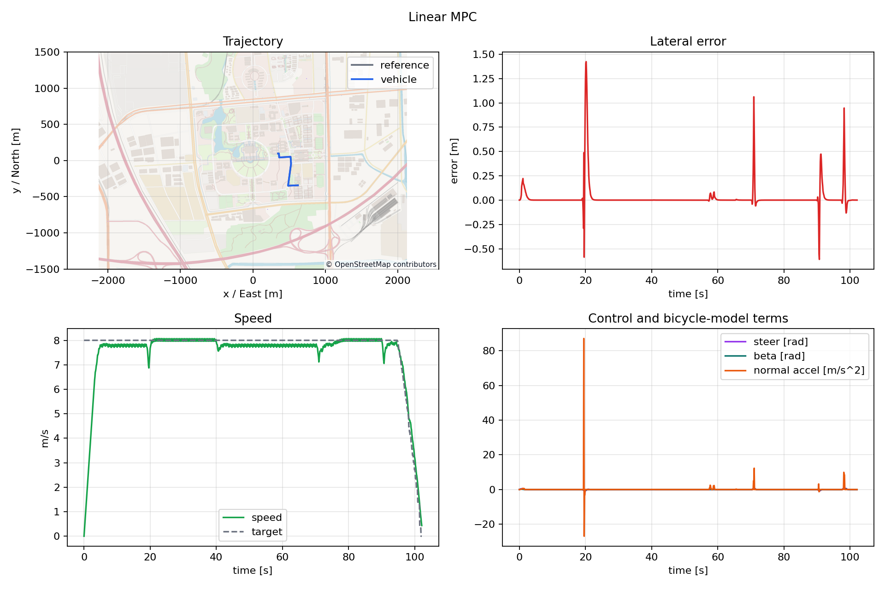
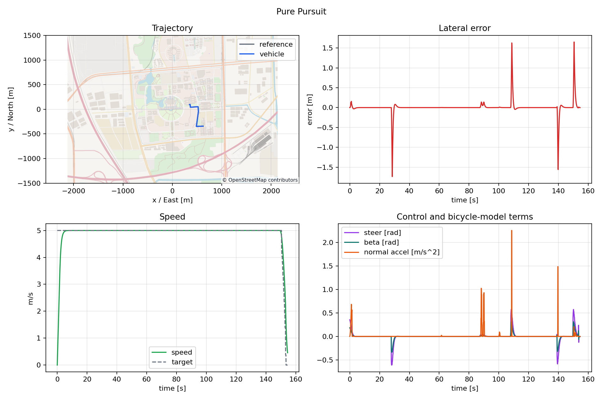
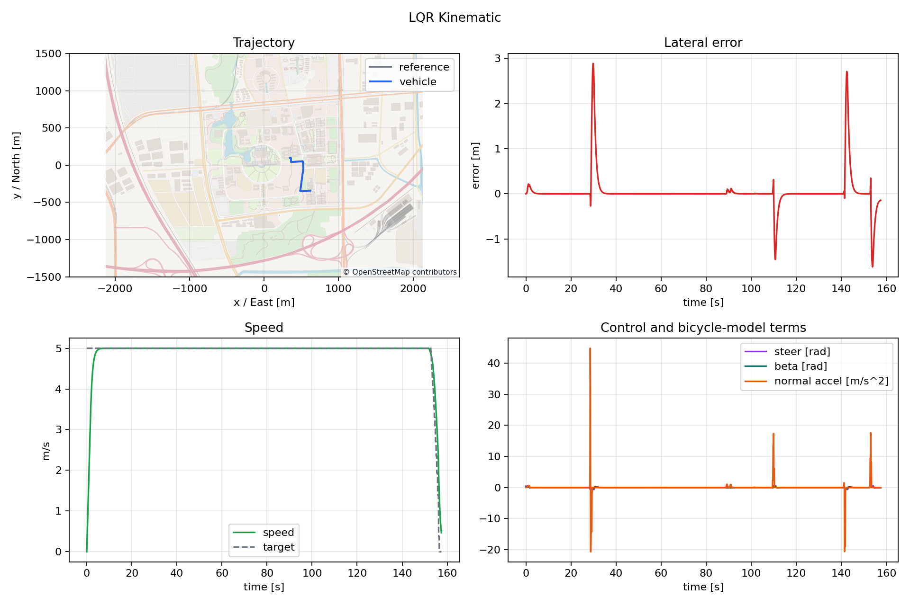
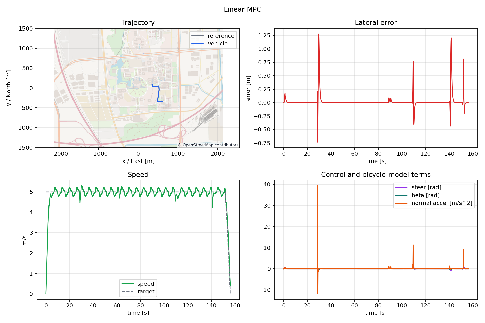

GPX 路线跟踪：PP / LQR 运动学 / MPC 三算法对比
| 参数 | 值 |
|---|---|
| GPX 文件 | data/gpx/dorm_to_classroom.gpx（寝室到教室） |
| GPX 原始点数 | 27 个 |
| 重采样后参考点数 | 776 个（--waypoint-ds 1.0） |
| 路线长度 | 774.1 m |
| 最大相邻点距离 | 147.9 m（中位数 5.0 m） |
| 坐标系 | WGS84（GPX 标准坐标系） |
| 底图来源 | OpenStreetMap GeoJSON 离线底图 |
| 参数 | 值 |
|---|---|
| 坐标原点经度 | 118.8145 |
| 坐标原点纬度 | 31.8885 |
| 地图覆盖经度范围 | 118.792 ~ 118.837 |
| 地图覆盖纬度范围 | 31.875 ~ 31.902 |
| GPX 路线经度范围 | 118.8182 ~ 118.8211（在覆盖范围内） |
| GPX 路线纬度范围 | 31.8854 ~ 31.8894（在覆盖范围内） |
| 验证结果 | 运行时控制台输出 map_origin_lon=118.8145000, map_origin_lat=31.8885000，与任务书要求一致 |
| 指标 | PP | LQR 运动学 | MPC |
|---|---|---|---|
| reached_goal | True | True | True |
| 用时 (s) | 99.4 | 104.0 | 102.1 |
| 路线长度 (m) | 774.1 | 774.1 | 774.1 |
| 平均横向误差 (m) | 0.0504 | 0.4208 | 0.0289 |
| 最大横向误差 (m) | 1.901 | 2.789 | 1.424 |
| 终点误差 (m) | 0.973 | 0.868 | 0.093 |
| 最大转角 (rad) | 0.577 | 0.611 | 0.611 |
| 最大法向加速度 (m/s²) | 5.78 | 95.91 | 87.10 |
| 指标 | PP | LQR 运动学 | MPC |
|---|---|---|---|
| 出现时间 (s) | 88.5 | 20.2 | 20.2 |
| 路线里程 s (m) | 708.0 | 146.0 | 147.0 |
| 经度 (lon) | 118.81834 | 118.81964 | 118.81964 |
| 纬度 (lat) | 31.88889 | 31.88540 | 31.88541 |
| 曲率 (1/m) | 0.0 | 0.0 | 0.0 |
| 当时速度 (m/s) | 8.0 | 8.0 | 7.805 |
| 当时转角 (rad) | -0.418 | -0.611 | -0.519 |
4.1 最大偏差位置标注图

图0：三种算法最大横向偏差位置标注（局部米制坐标，原点 118.8145E, 31.8885N）。LQR/MPC 的峰值在起点附近 s≈146m 急弯处（蓝色/绿色标记重合）；PP 的峰值在终点前 s=708m 直道；PP 降速 5 m/s 后峰值迁移到 s=135m。由 task3/scripts/plot_deviation_map.py 生成
| 指标 | 速度 8 m/s | 速度 5 m/s | 变化 |
|---|---|---|---|
| reached_goal | True | True | - |
| 用时 (s) | 99.4 | 154.5 | +55.4% |
| 平均横向误差 (m) | 0.0504 | 0.0376 | -25.4% |
| 最大横向误差 (m) | 1.901 | 1.736 | -8.7% |
| 终点误差 (m) | 0.973 | 0.924 | -5.1% |
| 最大法向加速度 (m/s²) | 5.78 | 2.26 | -60.9% |
| 最大偏差出现时间 (s) | 88.5 | 28.5 | -67.8% |
| 最大偏差路线里程 (m) | 708.0 | 135.0 | -80.9% |
| 最大偏差处速度 (m/s) | 8.0 | 5.0 | -37.5% |
| 最大偏差处转角 (rad) | -0.418 | -0.545 | +30.3% |
| 指标 | 速度 8 m/s | 速度 5 m/s | 变化 |
|---|---|---|---|
| reached_goal | True | True | - |
| 用时 (s) | 104.0 | 157.4 | +51.3% |
| 平均横向误差 (m) | 0.4208 | 0.0988 | -76.5% |
| 最大横向误差 (m) | 2.789 | 2.889 | +3.6% |
| 终点误差 (m) | 0.868 | 0.887 | +2.2% |
| 最大法向加速度 (m/s²) | 95.91 | 44.80 | -53.3% |
| 最大偏差出现时间 (s) | 20.2 | 29.8 | +47.5% |
| 最大偏差路线里程 (m) | 146.0 | 146.0 | 0.0% |
| 最大偏差处速度 (m/s) | 8.0 | 5.0 | -37.5% |
| 最大偏差处转角 (rad) | -0.611 | -0.611 | 0.0% |
| 指标 | 速度 8 m/s | 速度 5 m/s | 变化 |
|---|---|---|---|
| reached_goal | True | True | - |
| 用时 (s) | 102.1 | 156.0 | +52.8% |
| 平均横向误差 (m) | 0.0289 | 0.0287 | -0.7% |
| 最大横向误差 (m) | 1.424 | 1.280 | -10.1% |
| 终点误差 (m) | 0.093 | 0.118 | +26.9% |
| 最大法向加速度 (m/s²) | 87.10 | 39.50 | -54.6% |
| 最大偏差出现时间 (s) | 20.2 | 29.6 | +46.5% |
| 最大偏差路线里程 (m) | 147.0 | 147.0 | 0.0% |
| 最大偏差处速度 (m/s) | 7.805 | 5.107 | -34.6% |
| 最大偏差处转角 (rad) | -0.519 | -0.611 | +17.7% |
| 指标 | PP | LQR 运动学 | MPC |
|---|---|---|---|
| 平均误差变化 | -25.4% | -76.5% | -0.7% |
| 最大误差变化 | -8.7% | +3.6% | -10.1% |
| 终点误差变化 | -5.1% | +2.2% | +26.9% |
| 法向加速度变化 | -60.9% | -53.3% | -54.6% |
| 用时变化 | +55.4% | +51.3% | +52.8% |
| 偏差位置迁移 | 708m → 135m | 146m（不变） | 147m（不变） |
6.1 GPX 路线与离线底图概览（PP 实验）

图1：GPX 路线（红色）叠加在 OpenStreetMap 离线底图上，坐标原点 (118.8145, 31.8885)
6.2 PP 算法跟踪结果汇总

图2：PP 算法 summary（轨迹、横向误差、速度、转角）
6.3 LQR 运动学算法跟踪结果汇总

图3：LQR 运动学算法 summary
6.4 MPC 算法跟踪结果汇总

图4：MPC 算法 summary
6.5 降速后 PP 算法跟踪结果（速度 5 m/s）

图5：PP 算法在速度 5 m/s 下的 summary
6.6 降速后 LQR 算法跟踪结果（速度 5 m/s）

图6：LQR 运动学算法在速度 5 m/s 下的 summary
6.7 降速后 MPC 算法跟踪结果（速度 5 m/s）

图7：MPC 算法在速度 5 m/s 下的 summary